Sides Helper User Manual
What it is
Sides Helper is the sides tool and the read-along in one app. With nothing plugged in it does everything the free web enlarger does: opens the locked PDF, enlarges the dialogue or the whole page, highlights each character in their color, Reader mode, prints. Turn on Follow and it listens to your mix, follows the dialogue, and the screen becomes the page you'd have cut, highlighted and taped up beside the monitor, with a thin rail across the top showing who's on now and the next five in order, each with your own source label (fader 3, boom 2, the plant) and color.
It runs on an iPad with iPadOS 17 or later, or as a native Mac app on the M-series Mac mini already on your cart. An iPad that stops before iPadOS 17 has the sides tool in Safari at gotham-sound.github.io/sides-enlarger, without Follow.
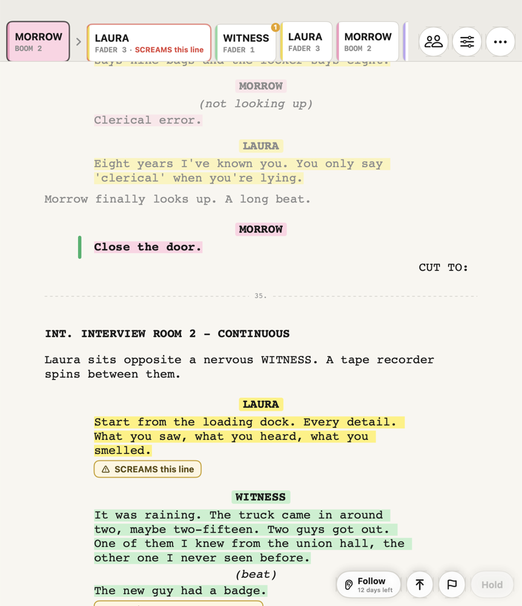
It replaces the cut-up, taped-up sides and the highlighters. If you're already on an iPad with Scriptation and a pedal, it replaces both: same PDF, same highlights, and the page follows the take on its own. Your mix stays yours; the app is a second set of eyes on the script.
Everything happens on the device. The script is parsed there, the speech recognition runs there, and nothing is uploaded anywhere. The app has no account and no server. You can turn Wi-Fi and cellular off and it works exactly the same.
What it costs
The sides tool is free. Follow is free for 14 days from the first time you switch it on, then $49.99, once. On the iPad that's an in-app purchase; on the Mac it's a license key we email you: paste it into the unlock screen, or open the .sideshelper-license file that came with it. Either way the app needs the internet to buy and never again: no subscription, no check-ins, no expiry. After you buy, one screen asks if you'd like an email when there's a new version. Skip it if you like.
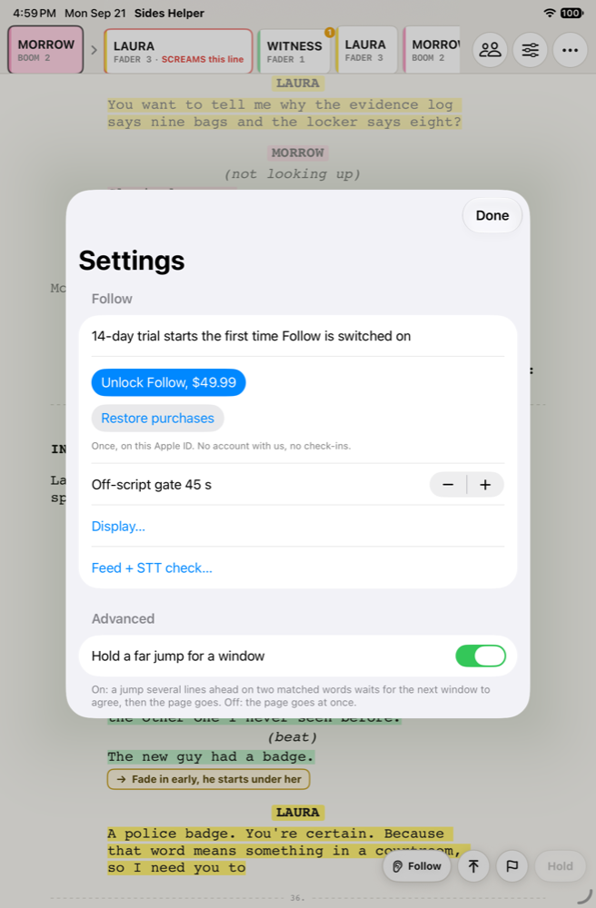
Getting started
Four things and you are set: install, open the sides, set the KEY, turn Follow on. Turning Follow on is where the right input matters, so that step is spelled out.
1. Install. On the Mac, open the disk image, drag Sides Helper to Applications, and eject it. It opens like any app: the disk image and the app inside are signed and notarized, so macOS asks nothing. The Read me first inside the disk image says the same. On the iPad, install from TestFlight or the App Store. Nothing asks for an account.
2. Open the sides. Share the PDF to Sides Helper from Mail, Messages or Files, AirDrop it, drag it in, or use Open PDF in the ⋯ menu at the top right. With sides already open, Open PDF starts a new packet and Add another PDF adds pages to the one you have. On the Mac, File > Open or drop the PDF on the window. The page comes up in screenplay layout with every character in a highlighter color. No sides on hand? Open sample sides on the first screen opens a short made-up scene with a KEY already filled in. Sides that came as a Netflix link? Open a sides link, in the ⋯ menu or on the first screen, takes the pasted link, turns the viewer link into the file behind it, and opens it in Safari; tap Share, then Sides Helper. On the Mac the link opens in your browser: save the PDF and open it, or drag the address-bar icon onto the window. The Mac also takes a PDF dropped on the Dock icon, and Cmd-O opens one, Cmd-Shift-O adds another, and File > Close (Cmd-W) closes the sides while the window stays. The red dot closes the window, and any menu item brings it back.
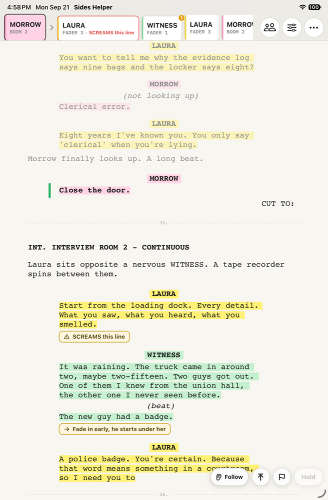
3. Set the KEY. The two-person icon at the top right opens Roster and KEY: one row per character. Tap the source cell, type the label you want to see (FADER 3, BOOM 2, PLANT), tap a color. The KEY is remembered by character name, so tomorrow's sides come up already set.
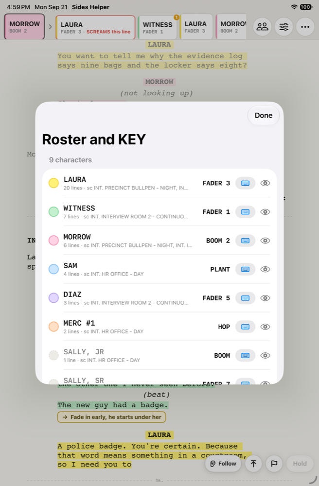
4. Turn Follow on. The Follow switch sits at the bottom right. The first time, the app asks for microphone access. The speech model is inside the app, so nothing downloads. Follow is free for 14 days from that moment.
5. Pick the right input. This is the step to get right. Open Feed + STT check from the ⋯ menu.
- Input lists every audio device the iPad or Mac can see. Pick the recorder or mixer on the USB cable, or the interface it feeds. On the Mac, an aggregate device or Dante Virtual Soundcard appears here too. The built-in mic is for a quiet-room rehearsal and is never the feed on set. A pick here sticks; with nothing picked, the app uses a recorder over USB when one is plugged in, otherwise the built-in mic. A picked device that is not plugged in is named in the panel and at the Follow switch; the app does not listen to the mic in its place. On the Mac, the one microphone prompt from macOS covers every input, the USB feed included.
- Channel appears for any device with more than one: Sum (L+R) or a single channel. Sum is channels 1 and 2 averaged and nothing more. A stereo mix out wants Sum; a mono aux send on the left wants Channel 1; a recorder that streams many channels over USB wants the mix on 1 and 2, or its channel picked here. If the words come back thin or not at all, this is the first thing to check.
- Gain. The meter shows level after the gain. Set it so dialogue sits in the green with peaks touching orange; a soft limiter catches anything hot, so a little too much is safer than too little. There is no automatic gain, on purpose.
- Listen, then read the line the panel shows you into the feed. "heard 6/7" means the words came back; the dot at the right of the meter lights green whenever the gate hears speech; Speed under 0.5× means the device is keeping up. That is the whole check for the day.
- The choice sticks. If the cable is pulled, a Feed lost banner shows and the app waits for the same device. It never switches to the built-in mic on its own.
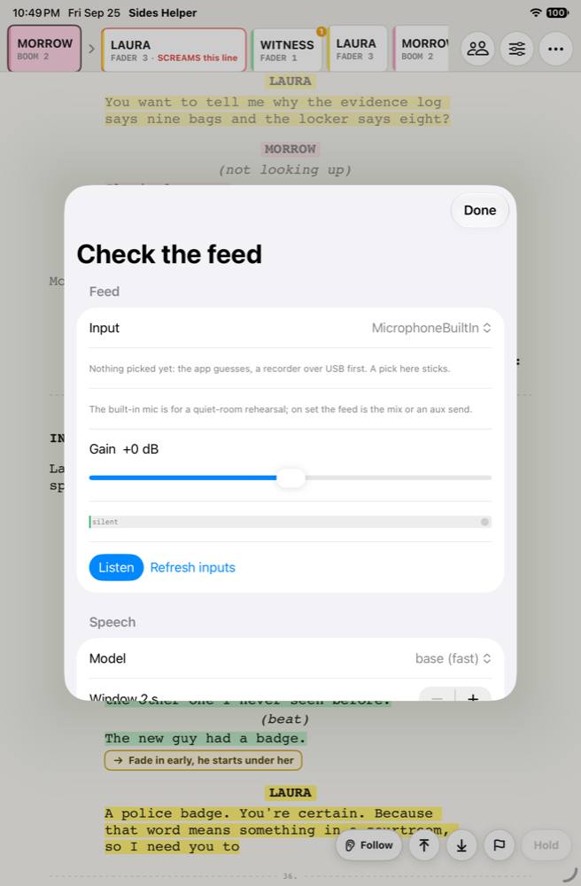
6. Pick the Follow display. The sliders icon opens Display. Follow display: Page (the default, the taped-up page that follows), Drum, Horizon, or Picture. What each one shows is under Follow displays below.
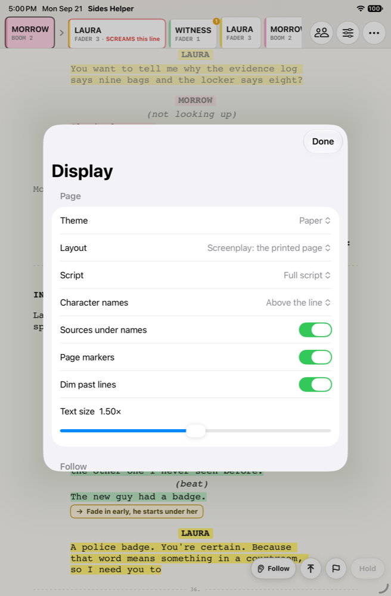
If something goes wrong, or you want something
Settings > Send a report. Settings is in the ⋯ menu, on the first screen before any sides are open, and on the Mac under the app menu (Cmd-,); it also carries a User manual link, which opens this manual in your browser. Pick Bug or Idea, tap Build the zip and open Mail, and the app opens an email to us with a small zip attached: the app version, your device and feed, your settings, and the app's own logs. It never includes the script, the audio, or your notes, and character names go only if you tick Include character names on the sheet; unticked, they read NAME 1, NAME 2 and so on. Write what happened and send. The report id on screen is how we'll find it if you call instead.
What changed in each build is on the changelog page; the build you have is in Settings.
Before you go to set
You need an iPad on iPadOS 17 or later (Follow keeps up on an M-series one; an older iPad runs the sides tool, with recognition slow or off) or a Mac with Apple silicon on macOS 14 or later, one cable, and a feed from your bag or cart. Nothing is needed until you turn Follow on; the sides tool works on its own. Do the one-time setup at home, not on the truck.
| Item | What to bring | Why |
|---|---|---|
| iPad | Any iPad with an M-series chip (M1 or later), iPadOS 17 or newer | Speech recognition runs on the chip. Older iPads load sides and show the script but recognition is slow or off. |
| Mac | Any Mac with Apple silicon (M-series), macOS 14 or later: the Mac mini on the cart | The same app, native. Recognition runs on the chip; every Core Audio input is an option, aggregate devices and Dante Virtual Soundcard included. |
| Cable | USB-C from the recorder or mixer to the iPad or the Mac | Most current bag recorders and cart mixers show up as a USB audio device with no driver. |
| Feed | Your mix out, or an aux send, over that USB connection | The app listens to the whole room through your mix. It does not need isolated channels. |
| Power | A USB-C hub with pass-through charging | Listening all day drains the battery. The hub carries audio and power on one cable. |
| Fallback | A small USB-C audio interface with a line input | For a mixer with no USB audio. Feed it from a headphone or aux out. |
One-time setup, at home, with the app open:
- Plug in the recorder and pick it under Feed + STT check in the ⋯ menu. Choose a channel or Sum (L+R).
- On the same panel tap Listen and read the line it shows you into the feed. You want the words back (heard), a meter in the green, and a speed under 0.5×.
- Open Display (sliders icon, top right) and set it up how you like it: paper or dark, what the rail shows, how far ahead. Paper is the default and reads like the taped-up pages; dark is easier under a tent.
A note on the feed. Your mix out carries your own fader moves, so a lav you have down is quiet in the feed until you bring it up. That is fine when you are on top of it. If you want the app to hear everyone at full level regardless, send it a pre-fader aux with every lav at unity.
Loading the day's sides
Open the sides PDF in Sides Helper the same way you open any PDF on an iPad: share it from Mail or Messages, open it from Files, AirDrop it, drag it in from another app, or use Open PDF in the ⋯ menu. With sides already open, Open PDF starts a new packet, the old one's KEY remembered as Close packet remembers it, and Add another PDF adds pages to the one you have. On the Mac: File > Open, or drop the PDF on the window or the Dock icon. Parsing a normal day of sides takes a few seconds.
Things that work without you doing anything:
- Locked PDFs. Production sides are usually permission-locked. The app reads them and treats the result with the same care as the original.
- Several PDFs. Add a second episode's pages and they join the same packet. Page markers carry the episode name so you can tell them apart. The same PDF opened again replaces itself rather than adding a copy.
- Call sheets, title pages, revision tables. Pages with no dialogue are skipped in the reader.
- Colored revisions. Revision stars in the margin are dropped from the reading text. The words are what matter.
Things the app will refuse, with a message:
- Scans. If the PDF is a photo of paper with no real text, it says so. Ask production for the original export.
- AES-256 locked files. Rare. The message tells you to ask for a standard export or print it to PDF.
If the PDF already has highlights on it, from Scriptation or anything else, the colors come in with it and the roster is pre-colored. If you have a .sceneline show file from Sceneline, TechSpotter or Tablecut, drop it in too. The app uses it to confirm character names and scene headings, and you can export your source assignments back into it for the next department.
The roster and the KEY
The KEY is the list of what covers each character: a lav on a numbered fader, a second boom, a plant, a hop. It's the one thing you tell the app, and you tell it once per show.
After the sides load, Roster and KEY (the two-person icon at the top right) lists every speaking character it found, biggest part first, with line counts and the scenes they're in. Sides have no cast page, so this list comes from the pages themselves. Look it over.
To set a character's source:
- Tap the source cell on their row. A keypad opens.
- Type the label you want to see on the strip, in your own words: FADER 3, BOOM 2, PLANT, HOP. The keypad offers your quick labels and a number pad; the chip shows exactly what you typed.
- Tap a color. Sixteen to choose from; the four highlighter colors come first. A color already in use shows who has it. There is no gray, on purpose: a gray highlight looks like the shading sides use for omitted text. If the PDF came in with highlights already on it, the colors are filled in for you.
- Tap next to move down the list, or tap another row.
Things the KEY handles:
- A different source in one scene. If the plant covers her in 14 and the lav everywhere else, tap the scene column on her row and set 14 to the plant. The strip shows whichever source is in effect for the scene you're in.
- Two names on one source.
VOIGHTandVICTOR (V.O.)are listed separately because the script prints them separately; set both to the same source. - One boom covering two people. Same idea: two rows, one label.
- No source. A name with nothing set still shows in the strip, as a hollow chip, so you see them coming.
- One-line entries are dimmed. Hide anything that isn't a character with the eye at the end of the row; Show hidden brings them back. Missed a name? Type it under the list and tap Add. Names the shared name rule kept off the list sit under their own heading, each with an Add button.
The KEY is remembered on this device by character name. Tomorrow's sides come up already set. If packs get reshuffled, tap the cells that changed; if the whole show is re-patched, use Reset sources for this packet at the bottom of Roster and KEY.
The feed
The app needs to hear the dialogue. Give it your mix and check it once before the first take.
Choosing the input. Feed + STT check, in the ⋯ menu and in Settings, lists every audio device the iPad or Mac can see. Pick your recorder or interface, then the channels: a single channel, or channels 1 and 2 summed. The choice sticks, and the app reconnects when the same device is plugged back in; with nothing picked, a recorder over USB is used when it is plugged in, otherwise the built-in mic.
Gain. The meter on the Feed panel shows level after the gain. Set it so normal dialogue sits in the green with peaks touching orange. There is no automatic gain, on purpose: auto gain pumps room noise up between lines and confuses recognition. A soft limiter catches anything hot, so a little too much gain is safer than too little.
The check. Tap Listen, read the line on screen into the feed at a normal set level, and look at three things. "heard 6/7" says how many of the line's words came back. The meter says the gain is right. Speed, under 0.5×, says the device is keeping up. All three good and you are set for the day.
If the feed disappears (cable pulled, recorder rebooted), a banner says Feed lost and the strip goes gray. The app stays on the feed you chose rather than switching to the iPad's own microphone. Plug back in and it picks up where it was.
During the take
Tap Follow at the bottom right. What you see is the page you'd have taped up, with a thin rail across the top.
The page. Screenplay layout, same as the sides: scene heading with its number in the margins, character names centered, dialogue indented, page numbers where they were. Each character's name and lines carry their highlighter color. The current line is bold with a green bar beside it; lines already spoken are faded. A dashed rule with the page number marks where each original page began, so when someone calls page 34 you can find it. With Follow on, the page rides the take and the Following pill at the bottom right says so. Scroll by hand and it pauses where you left it until you tap a line, the pill, or Top of scene; Display can bring it back on its own after 5 or 15 seconds if you'd rather. With Follow off there is no pill: the page is a reader, and nothing moves it but you.
The rail. Left to right: who's on now (outlined, in their color), then the next five speakers in order. Each chip has the name and, if you've turned it on, the source label you typed: FADER 3, BOOM 2, PLANT. When the current speaker is on their last line, the next chip gets a red ring. When the speaker changes, the rail slides left.
Same speaker, several lines. A three-line speech is one chip. The rail moves on speaker changes, not lines.
A hollow chip is a character you haven't given a source. They still show in the rail so you see them coming.
Notes. Press a line to write yourself a note: hold a finger on it, touch it with the Pencil, or right-click it on the Mac. "Fade in early, he starts under her," "screams this line," whatever you'd have scrawled in the margin. It shows under the line in a little box, and it rides the rail: the chip for that line carries a badge while it's further out, and shows the note text when that line is next. Mark one as a warning and the chip pulses when it comes up. Tap a note to change or delete it. On a take, the flag button beside Hold drops a flag on the line being heard, and held, on the next speaker's line. Your quick phrases appear beside the bar for a few seconds: tap one and the flag has its words, tap the warning glyph and it is a warning, or leave it and it stays a flag to fill in between takes. A flag shows as a flag under the line and on the rail. Notes are remembered by show, and when a new draft of the sides comes in they find their line again; anything that can't find its line waits in an Unplaced tray rather than disappearing.
Bigger notes, and the Pencil. Display has a note size: normal, large, or huge, and a switch that makes every warning huge, for one you can read from the boom. With an Apple Pencil you can write the note instead of typing it. By default your handwriting turns into text as you write. Switch to Ink in Display and it stays exactly as you scrawled it, on the page and as a small thumbnail on the rail. Ink is the iPad's; on the Mac, notes are typed.
Make it yours. The sliders icon at the top right opens Display. Paper, dark, or follow the iPad. Layout: Screenplay, the printed page, or Reader, the web tool's Reader mode set full width in a serif with the wraps removed, twice the size by default with its own slider up to 3×. Sources on the chips or just names. How far ahead the rail shows, one to five. Get-ready ring on or off. Full script or dialogue only. Names centered like the page or in a left column. Page markers, faded past lines, where the current line sits while following, Scroll or Turn for how the page moves, Stay in the scene (the scene lock, below), text size, which a pinch on the page sets too, two fingers on the iPad or the trackpad on the Mac, for the layout you are in. And the quick labels on the KEY keypad, so if you call it a hop it says HOP. All of it sticks on this device.
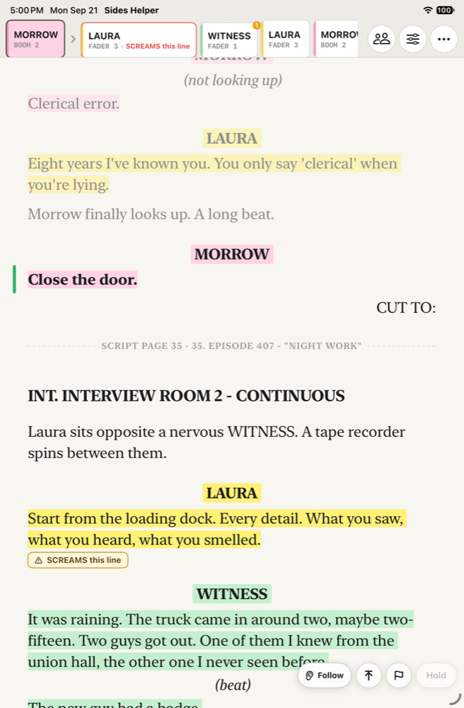
Follow displays
The page is one of four ways to watch a take. Display > Follow display picks one. All four read the same tracker and show the same names, sources and colors.
Page, the default. The taped-up page, following, with the rail across the top: who is on now and the next five.
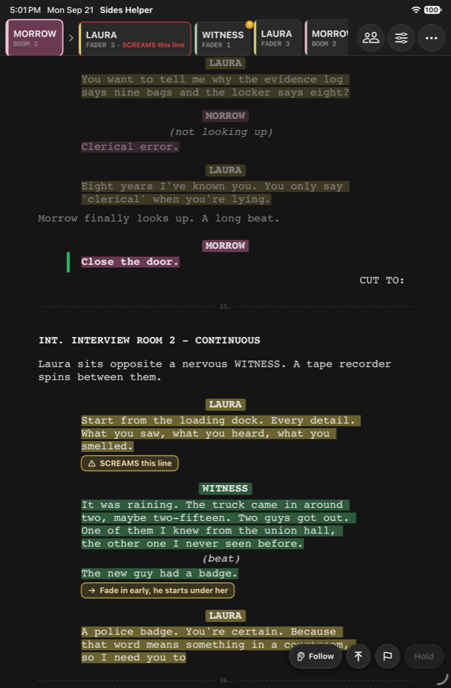
Drum. Portrait, for the mini on the mount. Lines on a wheel under a band in the top third of the screen: the line just heard above it, the line being heard under the band at full size with its last words underlined (the outcue), the lines to come beneath, receding. Names carry; the words are only the cues by default (Display: Words on the cue view). When the current line is about to end, the next name blinks: on deck. The blink is a lead, not a fact.
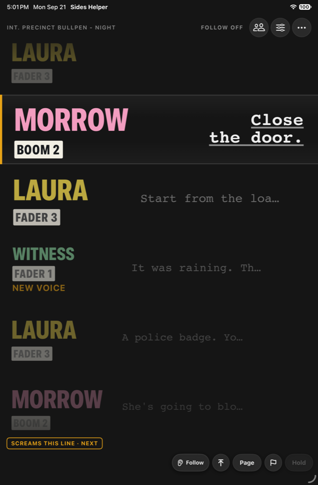
Horizon. Landscape. Lines as blocks on a belt that runs right to left under a playhead marked NOW, each block as wide as its line is long. The belt moves at the read's own pace and never backwards (Display: Belt motion, Glide or Step). The script's own events (off screen, on the phone, overlapping) and your warning notes fly as flags above the block they belong to. The small line at the bottom left says how far the ears are behind the room.
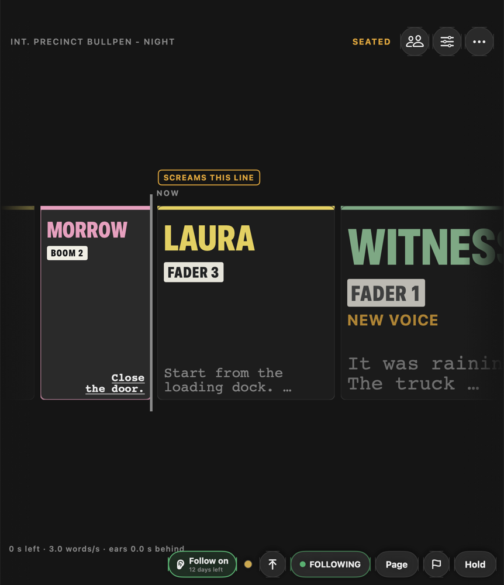
Picture. Landscape. A camera feed over USB, full frame, with the belt as a lower third. The band carries the state word and the Follow controls, and nothing else sits on the picture. Display: band height, band opacity, camera (Auto takes a USB camera first). The feed is shown and nothing more: not recorded, not stored, not sent. In portrait the band shows alone.
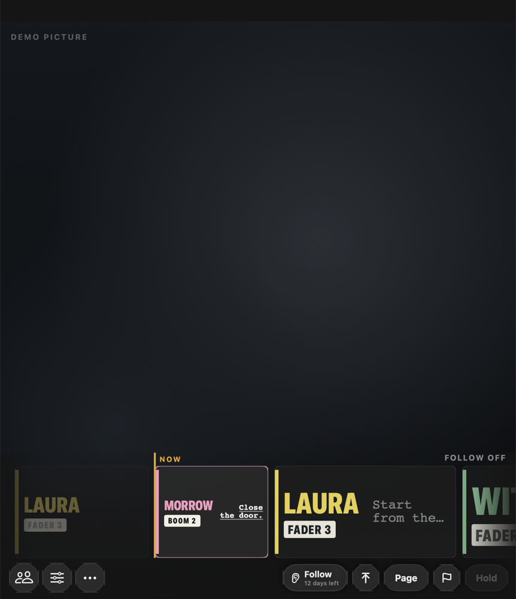
Ahead of the ears. The ears place words a second or two after they are said. The cue views run forward through that gap at the read's pace, over the seconds the gate hears speech, so the next name lights when the line has run out rather than when the words come back. Display > Ahead of the ears: Name, the default, lights the name and runs the belt to the end of the line. Block turns the cue view to the next line too, drawn dashed with the word ASSUMED until the tracker agrees, for anyone who accepts a wrong turn now and then in exchange. Off leaves the lead to the clock alone. The page and the rail never move on a guess.
The page is one pill away. The pill in the bottom bar goes both ways: Page from a cue view, the cue view's name from the page. Nothing you touch on a take changes what you are looking at: on a cue view, as on the page, a tap on a block seats the tracker, and a press on it opens a note there. On the cue views the rail is gone; its three buttons sit at the top right.
What the colors mean
The app always tells you how sure it is. The pulse in the top bar and the look of the chips say the same thing, so you can read it from across the cart without reading words.
| Pulse | Chips | It means | What to do |
|---|---|---|---|
| Green, LOCKED | Solid, filled with color | It knows where the read is and is keeping pace. | Trust the strip. |
| Slow yellow, SEATED | Outlined | It hears speech but is not sure of the place yet. Normal right after Start, after a jump, or after a long quiet stretch. | Give it a line or two. If you know where you are, tap the line. |
| Fast yellow, STUCK, with a banner | Dashed, with a question mark | It has been off the script for a while, usually a reset, direction, or a scene it did not expect. The banner says what it thinks it is hearing and offers a jump. | Tap the jump if it is right, or tap the correct line in the script. |
| Red, SILENT | Dimmed | Nothing recognizable for 30 seconds. Quiet room, or a feed problem. | Check the meter. If the meter is moving and it is still red, run the Feed + STT check. |
| Gray, HOLD | Gray | You pressed Hold. The cursor is frozen. | Release when the take starts. |
A yellow chip is still usually right. It just means the app is not yet confident enough to promise it. Dashed chips are a guess and you should treat them as one.
Taking control
You can always put the cursor where you want it. The app takes the hint and keeps following from there.
- Tap a line to tell it where you are. The cursor lands there, the rail rebuilds from that line, and the app takes your word for it: it holds that spot for a few seconds before it's allowed to disagree. This is the fastest correction there is.
- Top of scene and Next scene, the two arrow buttons next to Hold. One tap on the up arrow puts the cursor on the first line of the scene you're in. Tap it again at the top and it goes to the scene before, and again for the one before that, so a run of short scenes shot together steps back one tap at a time. The down arrow goes to the next scene. Hold either arrow for the list of scenes, the one you're in marked; tap a scene to go there. On the Mac, the Follow menu holds these and the rest of the take's controls with their keys: Follow (Cmd-F), Hold (Cmd-Shift-H), Stay in the scene (Cmd-Shift-L), Top of scene (Cmd-Up), Next scene (Cmd-Down), Scenes (Cmd-L), and Feed + STT check.
- Tap a chip on the rail to seat the cursor on that speaker's line.
- Hold. Freezes the cursor. Use it during blocking, rehearsal, and notes between takes so the rail doesn't wander while people talk over the scene. The app keeps listening underneath, so when you release it re-finds the place within a couple of lines.
- Scene lock. The lock capsule next to Hold. Locked, the cursor stays in the scene you put it in, whatever the room says; when it sounds like another scene, a chip in the rail offers it and one tap moves there. A tap on a line, Top of scene or the scene list move the lock with you. Tap the capsule again to follow across scenes. Off until you turn it on, and it stays on; Display > Follow > Stay in the scene is the same switch.
Resets and repeats. You do not have to do anything for a normal reset. When the crew goes back to one and the first lines of the scene are spoken again, the cursor jumps back on its own within a line or two. The same goes for coverage: shoot the same scene from three setups and it follows each take from wherever it starts, including mid-scene pickups.
Out-of-order scenes. Also handled. The packet is small, so the app is always checking every scene, not just the one it thinks you are in, and jumping from scene 14 to scene 9 is followed the same way a reset is. Unless you lock the scene. The lock capsule in the bar, next to Hold, keeps the cursor in the scene you put it in, so off-book talk that happens to match a line elsewhere moves nothing. When the room does sound like another scene, a chip in the rail offers it and one tap moves there; a tap on a line, Top of scene or the scene list move the lock with you. Tap the capsule again for a shot that runs from one scene into the next. It is off until you turn it on, and it stays on once you have; Display > Follow > Stay in the scene is the same switch.
Why a reset takes a moment. The cursor moves on two windows of matching speech in a row, about six seconds, not on one stray word. That's why a reset registers a line or two in, and why off-script remarks between takes leave it where it is.
Exports
Everything you can export is under Export in Print / Export, in the ⋯ menu. Each one goes to Files, the printer or the Share sheet; on the Mac, Save PDF, Print or Share, and Cmd-P opens Print / Export.
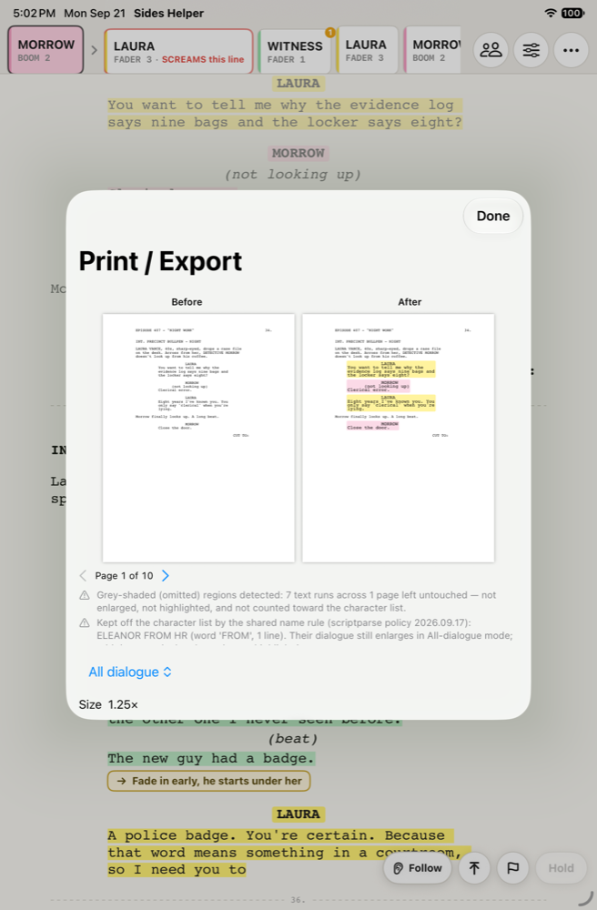
| Export | What it is | Who it is for |
|---|---|---|
| Reader PDF | The script in the same large layout as the screen, with highlights and source labels in the margin. Every page has a footer saying its page numbers do not match the shooting script; the gray page rules inside show where the original pages were. | You, for a paper backup on the cart. |
| Source sheet | One page: character, source per scene, color, line count. | Taping to the cart, handing to a utility or a second unit. |
.sceneline (lean) | The show file with your source assignments added. No script text inside, safe to share. | Other departments' tools. |
.sceneline (full) | The same, with the script text inside. As confidential as the script. | Only when another tool needs the text. Behind a confirmation. |
A .sceneline export only exists when you loaded one first. The app adds its own block to the file and leaves everyone else's work in it exactly as it found it.
Privacy
The script stays on the device. There is no upload, no account, no analytics, and no network use once the speech model is on the device.
What the app keeps on the iPad or the Mac: your settings, the roster and KEY by character name, and the current packet so it reopens where you left off. The packet contains the script text, so treat the device as you would treat the paper.
Audio passes through recognition and is gone. Each few seconds of feed is recognized and discarded; recognized text is used to move the cursor and is not shown or written anywhere.
To wipe it: Close packet removes the script and keeps your KEY (on the Mac, File > Close, or Cmd-W). Forget everything in Settings removes the packet, the KEY, and all settings. Turning in a rental iPad? Use Forget everything first.
Exporting a full .sceneline puts the script text in a file you then hold. Lean exports and the source sheet contain no script text.
Troubleshooting
| You see | Likely cause | Fix |
|---|---|---|
| Red pulse, meter moving | The feed is arriving but recognition is not getting words. Wrong channel, or gain far too low or too hot. | Feed + STT check: check the channel, then Listen and read a line. |
| Red pulse, meter flat | No audio reaching the app. | Check the cable and that the recorder is in USB audio mode. Feed lost banner means the device vanished. |
| Stuck banner every take | The scene being shot is not in the packet, or it is a heavily rewritten draft. | Add the right pages. If the words on set differ from the page, tap lines by hand for that scene. |
| Cursor lags a line behind | The device is slow: an older chip, or the small model on a busy day. | Feed + STT check, Model: base. Close other apps. An M-series iPad or Mac keeps up. |
| Wrong name in the strip | Two characters set to the same color, or a source label typed on the wrong row. | Prep: check the row. Colors are unique; sources repeat only when you mean them to. |
| A character is missing from the roster | The parse did not see a cue for them, usually a one-line part or an odd layout. | Type the name under the roster and Add. |
| Names look like R U M A | The PDF draws each letter separately and the parse failed to join them. Rare. | Report it with the page number, not the script. Meanwhile, hide the bad name and add the right one. |
| Chips gray, pulse gray | Hold is on. | Tap Hold to release. |
| Reader stopped scrolling | You scrolled it, so it is paused and the pill says so. Or Follow is off, and the page is a reader. | Tap a line, the pill, or Top of scene. With Follow off, turn Follow on. |
| Could not open this PDF | A scan, or AES-256 encryption. | Ask production for the original export. |
| A larger model will not download | The built-in model never downloads. Only the small or medium model, chosen in Feed + STT check, is fetched once. | Stay on base, or finish the download on Wi-Fi at home. After that the app needs no network. |
| The wheel spins on an open, then a message | The file or the sides engine did not answer in time: a PDF in iCloud not yet on this device, a slow disk or network share, or the engine after a long idle (fixed in build 100). | Do what the message says: wait for the cloud icon to clear, copy the file to the device, or try once more. If it happens again, Settings > Send a report carries what the engine said. |
| Follow is on, but no feed | The input you picked is not plugged in, or nothing is. The alert names it. | Plug it in, or pick another input in Feed + STT check. The app never listens to the built-in mic in place of your pick. |
| The Follow button says $49.99 unlock | The 14-day trial has ended. | iPad: the in-app purchase, once. Mac: paste the key from your email into the unlock screen, or open the license file that came with it. |
| The page jumped to another scene during a take | Someone spoke off book and the words matched a line in another scene. | Lock the scene: the lock capsule in the bar, or Display > Follow > Stay in the scene. The page then stays put, and a chip offers another scene when the room really is there. |
| The Mac app is running, but there is no window | The window was closed with the red dot, or with Cmd-W before build 152, when it was still macOS's Close. | Click the Dock icon, or any item in the File menu: the window comes back with the sides you had. Cmd-W is File > Close: the sides close, the window stays. |
Quick reference
Morning
- Plug in. Check the meter.
- Open the sides. Look over the roster.
- Set any new sources. Tap Follow.
During the take
- Left chip is on. Next chip is coming. Red ring means now.
- Green: trust it. Yellow: probably right. Dashed: a guess.
- Reset or new scene: it follows on its own within a line or two.
Fixing it fast
- Tap any line to seat the cursor.
- Hold between takes. Release when they roll.
- Red pulse with a moving meter: Feed + STT check.
Wrap
- Export the source sheet if a second unit needs it.
- Close packet. Forget everything on a rental.